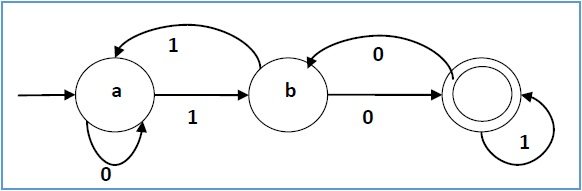

What is Deterministic Finite Automaton
- In DFA, for each input symbol, one can determine the state to which the machine will move. Hence, it is called Deterministic Automaton. As it has a finite number of states, the machine is called Deterministic Finite Machine or Deterministic Finite Automaton.
Formal Definition of a DFA
- A DFA can be represented by a 5-tuple (Q, ∑, δ, q0, F) where −
- Q is a finite set of states.
- ∑ is a finite set of symbols called the alphabet.
- δ is the transition function where δ: Q × ∑ → Q
- q0 is the initial state from where any input is processed (q0 ∈ Q).
- F is a set of final state/states of Q (F ⊆ Q).
Example Of DFA
| Present State |
Next State for Input 0 |
Next State for Input 1 |
| a |
a |
b |
| b |
c |
a |
| c |
b |
c |
Graphical Representation
